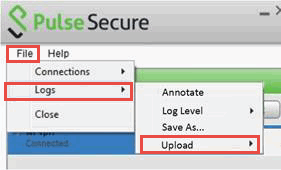

ログ ファイルのアップロード
Pulse Secure デスクトップ クライアントを使用すると、システム管理者による分析のために、診断ログ一式を PCS ゲートウェイに簡単に送信することができます。PCS にログ一式を送信するには、VPN 接続がアクティブなときに、デスクトップ クライアントのユーザー インターフェイスで [File] (ファイル) > [Logs] (ログ) > [Upload] (アップロード) を選択します。

ログの送信先のサーバーを選択する必要があります。アップロードの進捗状態を示すダイアログが表示されます。
 | エンド ユーザーが Pulse Secure ゲートウェイにログ ファイルを送る前に、システム管理者がこの機能をサーバー側で有効にする必要があります。 |
サーバーでは、アップロードされるクライアント ログの合計が 200MB に制限されています。
| Pulse Connect Secure ゲートウェイでは、アップロードされるログ ファイルの保存専用のディスク パーティションに制限があります。この領域が他のログ ファイルでいっぱいの場合、アップロードが失敗する場合があります。この場合、システム管理者にログをアップロードするための領域を確保するように連絡してください。 |